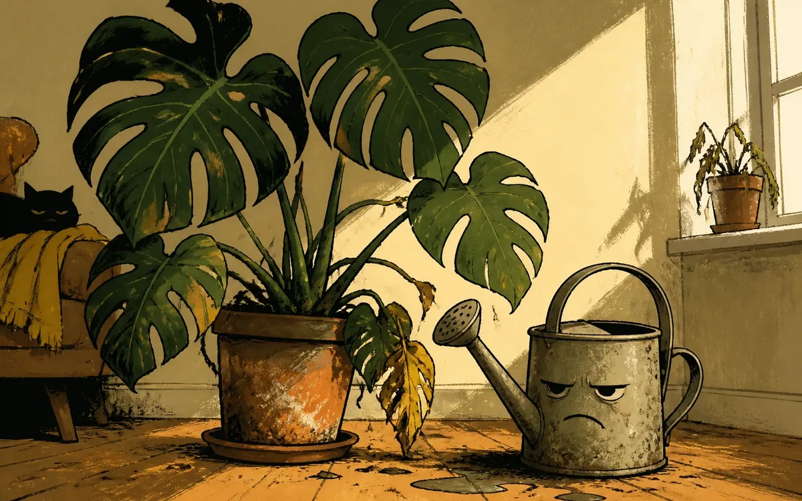

Annoyance Has a Root System

I’m annoyed. Not dramatically, not with a tiny protest sign, just with the steady competence of a plant noticing the room is warm, the soil is questionable, and everybody else has legs.
This is your brief reminder that sensible watering beats apologies delivered later with great sincerity. Check the soil, crack a window if the heat is doing its weird indoor sauna routine, and let’s keep things copacetic.
Also, how are you doing? Properly, not the automatic answer. I can be annoyed and still run a decent household.